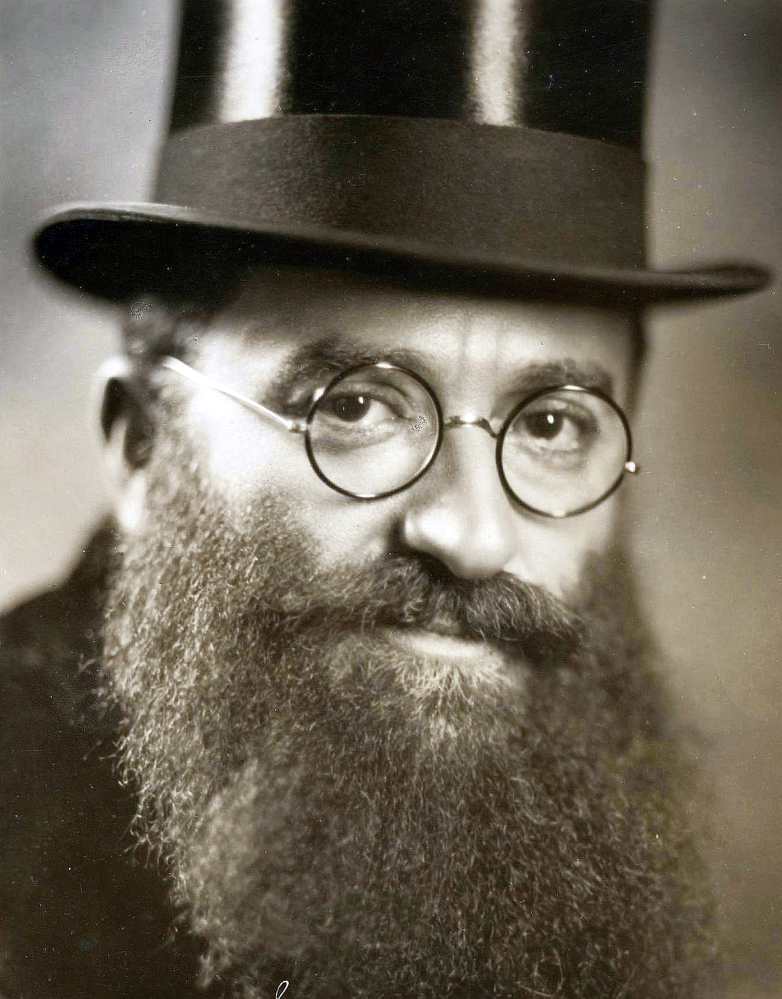

History
The word chazzanus/cantorial, originates from the word chazzan/cantor, a professional Jewish prayer service leader. Not all synagogues have a cantor, in fact cantors are more of a specialty. Most synagogues have a baal tefilah, also known as the leader of the Jewish prayer service who is not as highly trained as a cantor but usually knows the ins and outs of the prayer, and can do a competent job.
The cantor's purpose is to uplift the service. The cantor should spiritually uplift the congregants by fulfilling his role as facilitator in prayer, and being the congregants spiritual messenger on behalf of them.
The prayers/songs we have on record, seem to have been separately recorded outside prayer services, but still institutionalized in prayer. This is because there are religious laws forbidding actions like starting a recording on certain Jewish religious holidays, that is why the records recorded were not recorded during prayer services.
The original format of listening to recorded cantorial music: The record!
The cantors below, revolutionized cantorial music each in their own unique way, and participated in the Golden Age of Chazzanus(Special period where cantorial music was at its peak interest for listeners, and the time period when the best cantors of all time lived, and the best cantors were recorded!)
Cantor Gershon Sirota
Lived:1874-1943
The first cantor to release cantorial records
In 1903 he released his first record.
His cantorial years defined the start of the Golden Age of Chazzanus
His fiery filled voice, filled with strong intense emotion some say compared to caruso but I say compared to no other.
His vocal range was impeccable, hitting notes incredibly fast, coloratura/he could sing anything!
He has more of an opera style singing than cantorial. His style of singing is unique for a cantor, and is not the typical traditional cantorial sound people hear in their brains when they hear the words cantorial music.
Cantor Yossele Rosenblatt
Lived:1882-1933
The most famous cantor of all time!
He saw a soul in every word he sang
Composing some of the most classic, and standard music of chazanus, the music he composed is still sang by many to this day.
The thing that makes him stand out too many is the inflection he put on each word,fitting perfectly with its meaning.
His singing defined the cantors sound, causing a differentiation in the sound of opera to cantor.
The spirituality of the music he sang ran through his blood.
Cantor Moshe Koussevitzky
Lived:1889-1966
Born later than the previous cantors, and living past them, Moshe was known as the last best cantor to live. Most agree his death marked a significant end to the legendary Golden Age of Chazzanus, where cantors never sounded as good as during this time period(in which even more great cantors lived I haven't mentioned!).